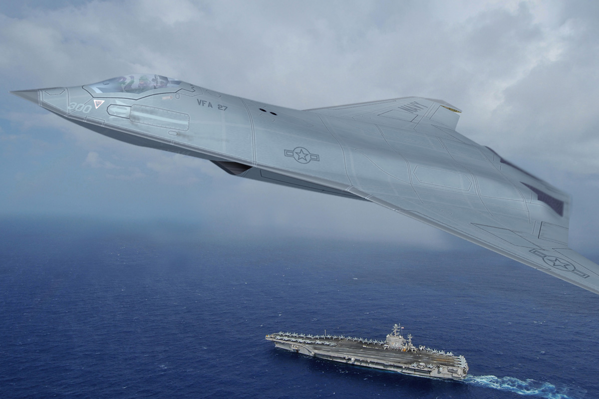
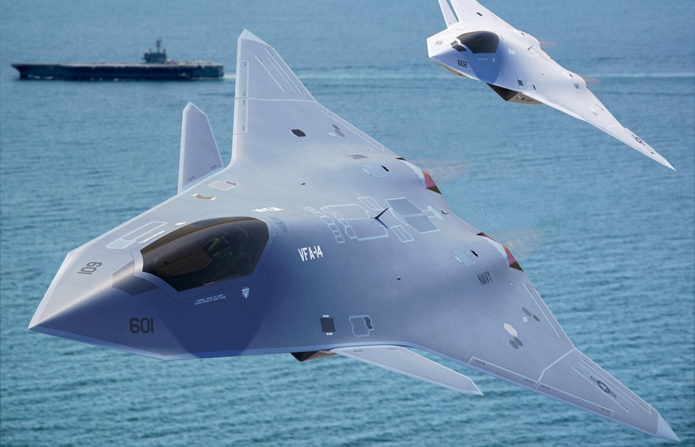

Para substituir os F/A-18E/F Super Hornet e complementar os F-35C, os Estados Unidos inciaram o programa F/A-XX, como um caça de 6° Geração e de superioridae aérea.
O F/A-XX é o componete central da familia de sistemas Next Generation Air Dominance (NGAD). Em 4 de April de 2019 a marinha Americana incio o desevolvimento conceitual.

Espera-se que na na proxima geral de caças, eles sejam caças de superioridade aéra mas com capacidae de multi-função, possuam uma conectividade e sensores no "maximo",
possuam uma arquiterura aberta permitindo uma grande variedae de sensores, armas e que possam ser usados em missões especificas. Uma propulsão que possa atingir super cruseiro, um novo espectro de armas,
como armas de energia direcionadas. Possam possuir um sistemas autonomo. Possuam capacidae de carga aumentada e que sejam compativeis com porta-aviões., com,o o Nimitx-Class e o Gerald R. Ford-Class.
